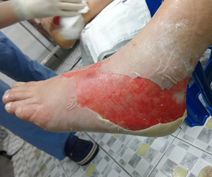
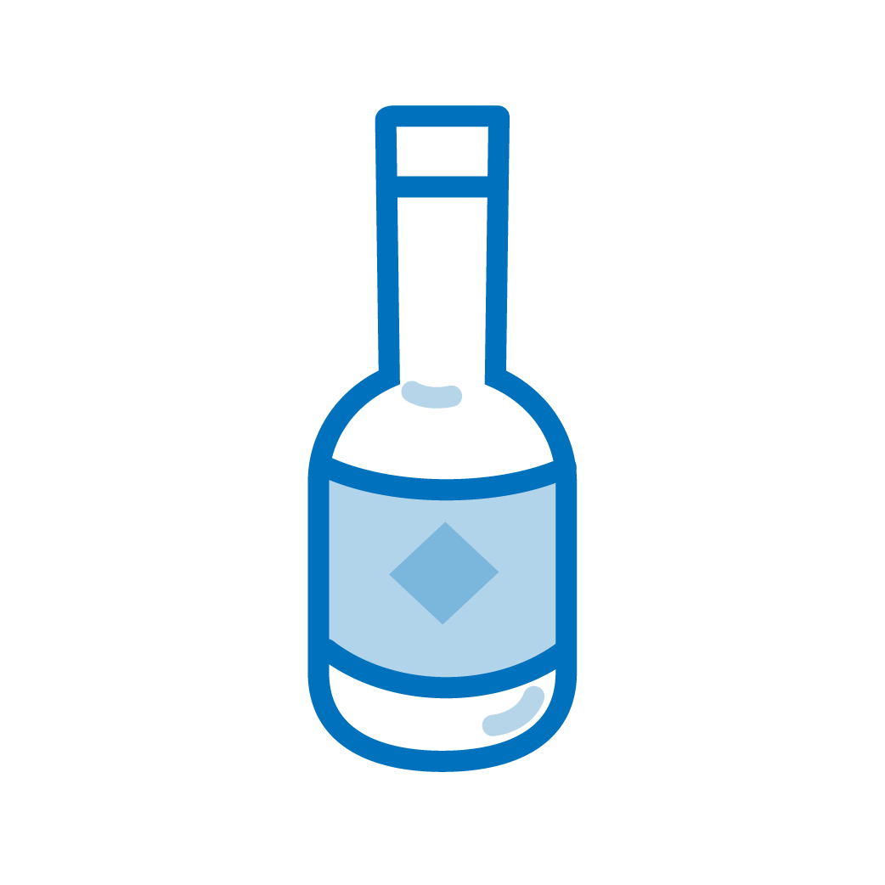
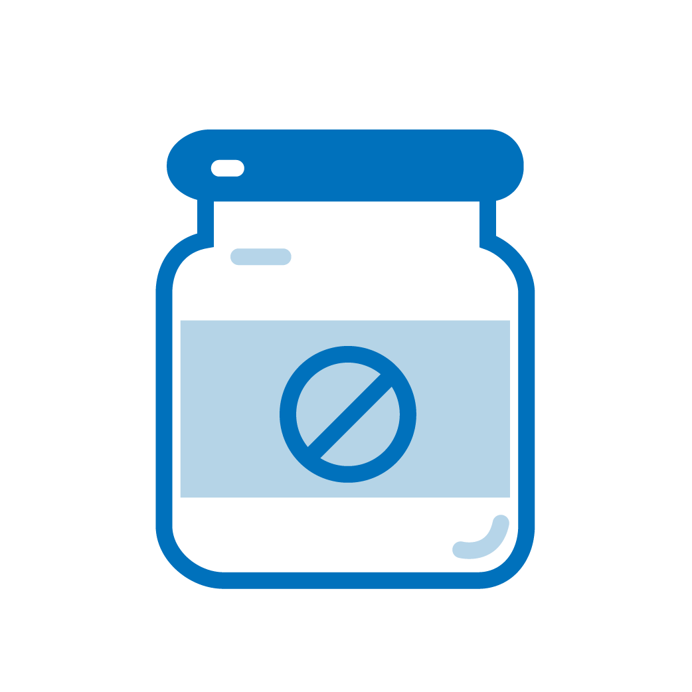
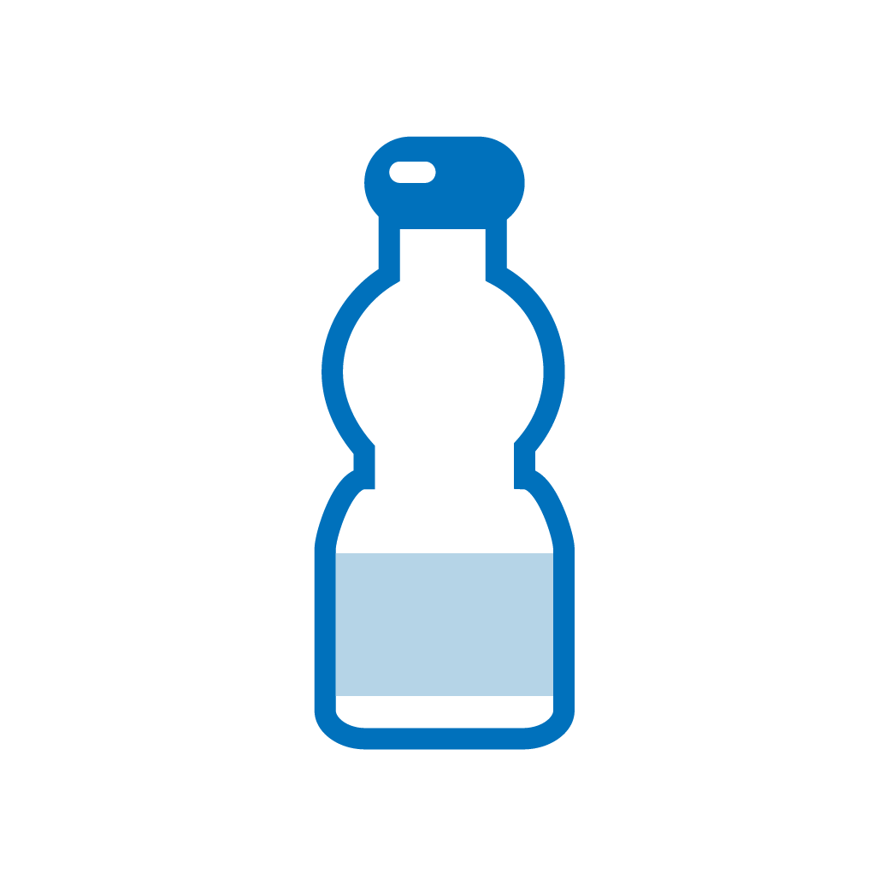

· 원인



· 특징
① 화학물질이 피부조직과 반응을 일으키므로 깊은 화상을 유발하는 경우가 많습니다.
② 산업현장이나 연구실 등에서 주로 발생합니다.
③ 산성이냐 알칼리성이냐에 따라 조직반응이 다름으로 진료 후에라도 의심되는 화학물질이 무엇인지 확인할 필요가 있습니다.
④ 특히 불산의 경우 조직침투속도가 빨라 화상 손상이 매우 깊어지며, 그 외에도 체내에서 급격한 전해질 불균형 등을 유발할 수 있어 불산에 의한 손상이 매우 위험할 수 있습니다.
⑤ 화학약품을 취급할 때는 반드시 안전규정을 준수 하여야 하며, 약품에 노출되었을 경우 우선 대량의 물로 30분 이상 중화시키고, 반드시 화상 전문의에게 진료를 받아야 합니다.